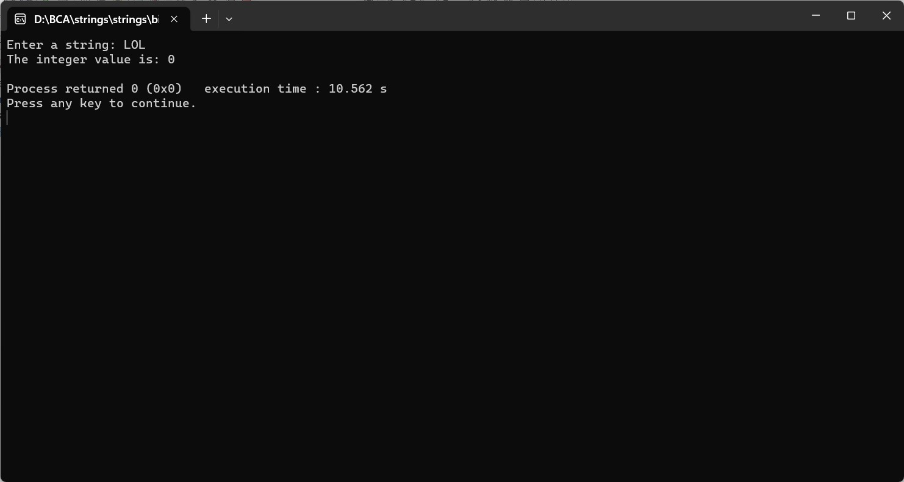

ENTER THE STRING FROM THE USER AND CONVERT INTO AN INTEGER VALUE
#include
int stringToInt(const char *str) {
int result = 0;
int sign = 1;
int i = 0;
// Check for the sign of the number
if (str[0] == '-') {
sign = -1;
i = 1;
}
// Iterate through the string to build the integer value
for (; str[i] != '\0'; ++i) {
if (str[i] >= '0' && str[i] <= '9') {
result = result * 10 + str[i] - '0';
} else {
// If non-numeric characters found, stop conversion
break;
}
}
return result * sign;
}
int main() {
char inputString[100];
int integerValue;
printf("Enter a string: ");
fgets(inputString, sizeof(inputString), stdin);
integerValue = stringToInt(inputString);
printf("The integer value is: %d\n", integerValue);
return 0;
}
